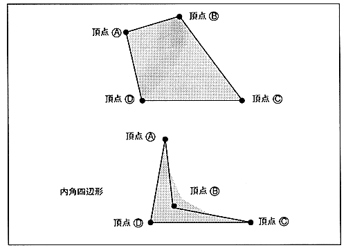

Return to previous page ｜ Return to menu ｜ Go to next page
-
■ Non-textured parts
- Non-texture parts do not require an original picture, so unlike texture parts, VDP1 does not access VRAM frequently.
-
● Polygon
- Draw a rectangle. Specify four vertices and fill the plane surrounded by four points with a single color. Four points can be specified arbitrarily.
Specified in non-texture color.
∙ Polygons are drawn as diagonal lines. At this time, fill in the holes so that there are no missing pixels. As a result, pixels written twice are generated, so the results of color translucent processing, etc. are not guaranteed.
内 You can also draw an inner square. However, since the line is drawn with a line, it may protrude outside the rectangle.
Figure 1.7 Polygon

Return to previous page ｜ Return to menu ｜ Go to next page